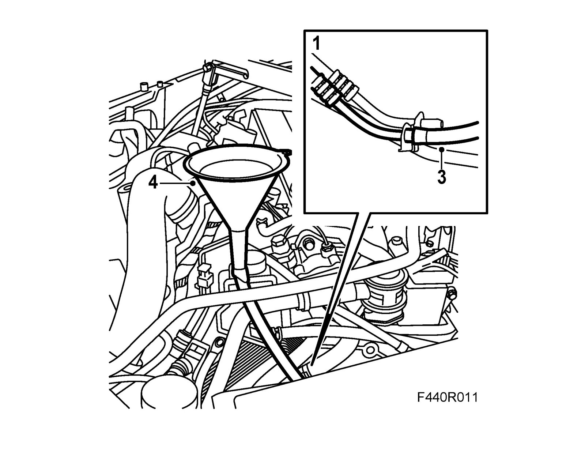

Transmission Cooler: Service and Repair
Flushing out the oil cooler1. The oil hoses must be detached when changing transmission.

2. Place a receptacle under the car to collect any spilled oil.
3. Remove the plugs and connect a 10 mm plastic hose to one of the oil hose fittings.
4. Connect a funnel to the plastic hose and pour 0.5 liters of automatic transmission fluid into the funnel.
5. Allow the oil to run through, taking with it the contaminated oil.
Note
The oil will run slowly.
6. Plug or connect the pipes when the oil has stopped running.